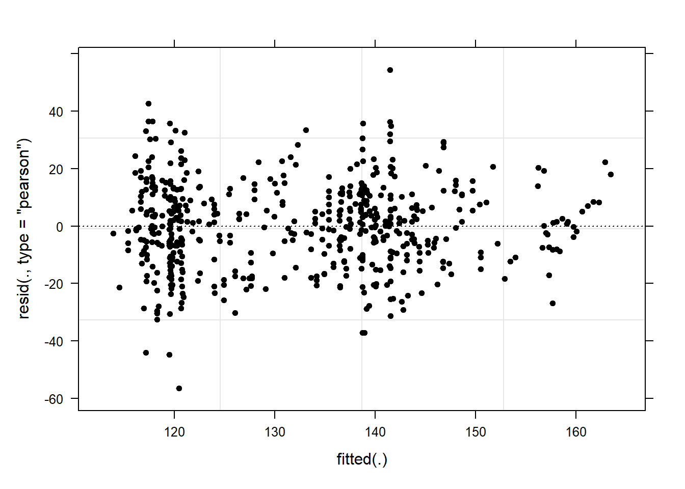

Week 12 Mixed-Effects Regression
Mixed-effects models (or mixed models) assume a hierarchical data structure in which data points are grouped or nested in higher order categories (e.g. students within classes). Therefore, mixed models enable us to model within-speaker variability which is important if several observations are produced by the same individual speaker. A disadvantage of mixed models is that they are prone to producing high \(\beta\)-errors (see Johnson 2009) and that they require rather large data sets.
In the following, we will go over mixed-effects linear regression models and mixed-effects binomial logistic regression models.
12.1 Linear Mixed-Effects Regression
So far, the regression models that we have used only had fixed-effects which means that all data points are treated as if they are completely independent and thus on the same hierarchical level. However, it is very common that the data is nested in the sense that data points are not independent because they are, for instance, produced by the same speaker or are grouped by some other characteristic.
With respect to regression modeling, hierarchical structures are incorporated by what is called random effects. When models only have a fixed-effects structure, then they make use of only a single intercept and/or slope (as in the left panel in the figure below), while mixed effects models have intercepts for each level of a random effect. If the random effect structure represents speakers then this would mean that a mixed-model would have a separate intercept and/or slope for each speaker (in addition to the overall intercept that is shown as an orange line in the figure below).

The equation below represents a formal representation of a mixed-effects regression with varying intercepts (see Winter 2019, 235).
\[\begin{equation} f_{(x)} = \alpha_{i} + \beta x + \epsilon \end{equation}\]
In this random intercept model, each level of a random variable has a different intercept. To predict the value of a data point, we would thus take the appropriate intercept value (the model intercept + the intercept of the random effect) and add the product of the predictor coefficient and the value of x.
Finally, the equation below represents a formal representation of a mixed-effects regression with varying intercepts and varying slopes (see Winter 2019, 235).
\[\begin{equation} f_{(x)} = \alpha_{i} + \beta_{i}x + \epsilon \end{equation}\]
In this last model, each level of a random variable has a different intercept and a different slope. To predict the value of a data point, we would thus take the appropriate intercept value (the model intercept + the intercept of the random effect) and add the coefficient of that random effect level multiplied by the value of x.
Random Effects
Random Effects can be visualized using two parameters: the intercept (the point where the regression line crosses the y-axis at x = 0) and the slope (the acclivity of the regression line). In contrast to fixed-effects models, that have only 1 intercept and one slope (left panel in the figure above), mixed-effects models can therefore have various random intercepts (center panel) or various random slopes, or both, various random intercepts and various random slopes (right panel).
What features do distinguish random and fixed effects?
Random effects represent a higher level variable under which data points are grouped. This implies that random effects must be categorical (or nominal but they a´cannot be continuous!) (see Winter 2019, 236).
Random effects represent a sample of an infinite number of possible levels. For instance, speakers, trials, items, subjects, or words represent a potentially infinite pool of elements from which many different samples can be drawn. Thus, random effects represent a random sample sample. Fixed effects, on the other hand, typically do not represent a random sample but a fixed set of variable levels (e.g. Age groups, or parts-of-speech).
Random effects typically represent many different levels while fixed effects typically have only a few. Zuur, Hilbe, and Ieno (2013) propose that a variable may be used as a fixed effect if it has less than 5 levels while it should be treated as a random effect if it has more than 10 levels. Variables with 5 to 10 levels can be used as both. However, this is a rule of thumb and ignores the theoretical reasons (random sample and nestedness) for considering something as a random effect and it also is at odds with the way that repeated measures are models (namely as mixed effects) although they typically only have very few levels.
Fixed effects represent an effect that if we draw many samples, the effect would be consistent across samples (Winter 2019) while random effects should vary for each new sample that is drawn.
In terms of general procedure, random effects are added first and only then include the fixed effects.
Preparation and session set up
For this week’s content, we need to install certain packages from an R library so that the scripts shown below are executed without errors. Hence, before turning to the code below, please install the packages by running the code below this paragraph.
# install
install.packages("Boruta")
install.packages("flextable")
install.packages("ggplot2")
install.packages("gridExtra")
install.packages("glmulti")
install.packages("lme4")
install.packages("rms")
install.packages("sjPlot")Now that we have installed the packages, we activate them as shown below.
# set options
options("scipen" = 100, "digits" = 12) # suppress math annotation
# load packages
library(flextable)
library(ggplot2)
library(gridExtra)
library(glmulti)
library(lme4)
library(rms)
library(sjPlot)Example: Preposition Use across Time by Genre
To explore how to implement a mixed-effects model in R we revisit the preposition data that contains relative frequencies of prepositions in English texts written between 1150 and 1913. As a first step, and to prepare our analysis, we load necessary R packages, specify options, and load as well as provide an overview of the data.
# load data
lmmdata <- base::readRDS(url("https://slcladal.github.io/data/lmd.rda", "rb")) %>%
# convert date into a numeric variable
dplyr::mutate(Date = as.numeric(Date))Date | Genre | Text | Prepositions | Region |
1,736 | Science | albin | 166.01 | North |
1,711 | Education | anon | 139.86 | North |
1,808 | PrivateLetter | austen | 130.78 | North |
1,878 | Education | bain | 151.29 | North |
1,743 | Education | barclay | 145.72 | North |
1,908 | Education | benson | 120.77 | North |
1,906 | Diary | benson | 119.17 | North |
1,897 | Philosophy | boethja | 132.96 | North |
1,785 | Philosophy | boethri | 130.49 | North |
1,776 | Diary | boswell | 135.94 | North |
1,905 | Travel | bradley | 154.20 | North |
1,711 | Education | brightland | 149.14 | North |
1,762 | Sermon | burton | 159.71 | North |
1,726 | Sermon | butler | 157.49 | North |
1,835 | PrivateLetter | carlyle | 124.16 | North |
The data set contains the date when the text was written (Date), the genre of the text (Genre), the name of the text (Text), the relative frequency of prepositions in the text (Prepositions), and the region in which the text was written (Region). We now plot the data to get a first impression of its structure.
p1 <- ggplot(lmmdata, aes(Date, Prepositions)) +
geom_point() +
labs(x = "Year", y = "Prepositions per 1,000 words") +
geom_smooth(method = "lm") +
theme_bw()
p2 <- ggplot(lmmdata, aes(Region, Prepositions)) +
geom_boxplot() +
labs(x = "Region", y = "Prepositions per 1,000 words") +
geom_smooth(method = "lm") +
theme_bw()
p3 <- ggplot(lmmdata, aes(x = reorder(Genre, -Prepositions), y = Prepositions)) +
geom_boxplot() +
theme_bw() +
theme(axis.text.x = element_text(angle=90)) +
labs(x = "Genre", y = "Frequency\n(Prepositions)")
p4 <- ggplot(lmmdata, aes(Prepositions)) +
geom_histogram() +
theme_bw() +
labs(y = "Count", x = "Frequency (Prepositions)")
grid.arrange(p1, p2, p3, p4, nrow = 2)The scatter plot in the upper panel indicates that the use of prepositions has moderately increased over time while the boxplots in the lower left panel show that the genres differ quite substantially with respect to their median frequencies of prepositions per text. Finally, the histogram in the lower right panel show that preposition use is distributed normally with a mean of 132.2 prepositions per text.
ggplot(lmmdata, aes(Date, Prepositions)) +
geom_point() +
facet_wrap(~ Genre, nrow = 4) +
geom_smooth(method = "lm") +
theme_bw() +
labs(x = "Date of composition", y = "Prepositions per 1,000 words") +
coord_cartesian(ylim = c(0, 220))
Centering numeric variables is useful for later interpretation of regression models: if the date variable were not centered, the regression would show the effects of variables at year 0(!). If numeric variables are centered, other variables are variables are considered relative not to 0 but to the mean of that variable (in this case the mean of years in our data). Centering simply means that the mean of the numeric variable is subtracted from each value.
lmmdata <- lmmdata %>%
dplyr::mutate(DateUnscaled = Date,
Date = scale(Date, scale = F))Date | Genre | Text | Prepositions | Region | DateUnscaled |
109.8696461825 | Science | albin | 166.01 | North | 1,736 |
84.8696461825 | Education | anon | 139.86 | North | 1,711 |
181.8696461825 | PrivateLetter | austen | 130.78 | North | 1,808 |
251.8696461825 | Education | bain | 151.29 | North | 1,878 |
116.8696461825 | Education | barclay | 145.72 | North | 1,743 |
281.8696461825 | Education | benson | 120.77 | North | 1,908 |
279.8696461825 | Diary | benson | 119.17 | North | 1,906 |
270.8696461825 | Philosophy | boethja | 132.96 | North | 1,897 |
158.8696461825 | Philosophy | boethri | 130.49 | North | 1,785 |
149.8696461825 | Diary | boswell | 135.94 | North | 1,776 |
278.8696461825 | Travel | bradley | 154.20 | North | 1,905 |
84.8696461825 | Education | brightland | 149.14 | North | 1,711 |
135.8696461825 | Sermon | burton | 159.71 | North | 1,762 |
99.8696461825 | Sermon | butler | 157.49 | North | 1,726 |
208.8696461825 | PrivateLetter | carlyle | 124.16 | North | 1,835 |
We now set up a mixed-effects model using the lmer function from the lme4 package (Bates et al. 2015) with Genre as a random effect.
# generate models
m0.lmer = lmer(Prepositions ~ 1 + (1|Genre), REML = T, data = lmmdata)Now, that we have created the base-line model, we can contiue to fit the model to the data.
Model Fitting
After having determined that including a random effect structure is justified, we can continue by fitting the model and including diagnostics as we go. Including diagnostics in the model fitting process can save time and prevent relying on models which only turn out to be unstable if we would perform the diagnostics after the fact.
We begin fitting our model by adding Date as a fixed effect and compare this model to our mixed-effects base-line model to see if Date improved the model fit by explaining variance and if Date significantly correlates with our dependent variable (this means that the difference between the models is the effect (size) of Date!)
m1.lmer <- lmer(Prepositions ~ (1|Genre) + Date, REML = T, data = lmmdata)
anova(m1.lmer, m0.lmer, test = "Chi")## Data: lmmdata
## Models:
## m0.lmer: Prepositions ~ 1 + (1 | Genre)
## m1.lmer: Prepositions ~ (1 | Genre) + Date
## npar AIC BIC logLik deviance Chisq Df
## m0.lmer 3 4501.947337 4514.805331 -2247.973668 4495.947337
## m1.lmer 4 4495.017736 4512.161728 -2243.508868 4487.017736 8.9296 1
## Pr(>Chisq)
## m0.lmer
## m1.lmer 0.0028059 **
## ---
## Signif. codes: 0 '***' 0.001 '**' 0.01 '*' 0.05 '.' 0.1 ' ' 1The model with Date is the better model (significant p-value and lower AIC). The significant p-value shows that Date correlates significantly with Prepositions (\(\chi\)2(1): 8.929600937903, p = 0.00281) . The \(\chi\)2 value here is labeled Chisq and the degrees of freedom are calculated by subtracting the smaller number of DFs from the larger number of DFs.
We now test whether Region should also be part of the final minimal adequate model. The easiest way to add predictors is by using the update function (it saves time and typing).
# generate model
m2.lmer <- update(m1.lmer, .~.+ Region)
# test vifs
car::vif(m2.lmer)## Date Region
## 1.20287667936 1.20287667936# compare models
anova(m2.lmer, m1.lmer, test = "Chi")## Data: lmmdata
## Models:
## m1.lmer: Prepositions ~ (1 | Genre) + Date
## m2.lmer: Prepositions ~ (1 | Genre) + Date + Region
## npar AIC BIC logLik deviance Chisq Df
## m1.lmer 4 4495.017736 4512.161728 -2243.508868 4487.017736
## m2.lmer 5 4494.624343 4516.054333 -2242.312171 4484.624343 2.39339 1
## Pr(>Chisq)
## m1.lmer
## m2.lmer 0.12185Three things tell us that Region should not be included:
the AIC does not decrease,
the BIC increases(!), and
the p-value is higher than .05.
This means, that we will continue fitting the model without having Region included. Well… not quite - just as a note on including variables: while Region is not significant as a main effect, it must still be included in a model if it were part of a significant interaction. To test if this is indeed the case, we fit another model with the interaction between Date and Region as predictor.
# generate model
m3.lmer <- update(m1.lmer, .~.+ Region*Date)
# extract vifs
car::vif(m3.lmer)## Date Region Date:Region
## 1.96923042276 1.20324697637 1.78000887978# compare models
anova(m3.lmer, m1.lmer, test = "Chi")## Data: lmmdata
## Models:
## m1.lmer: Prepositions ~ (1 | Genre) + Date
## m3.lmer: Prepositions ~ (1 | Genre) + Date + Region + Date:Region
## npar AIC BIC logLik deviance Chisq Df
## m1.lmer 4 4495.017736 4512.161728 -2243.508868 4487.017736
## m3.lmer 6 4496.124872 4521.840861 -2242.062436 4484.124872 2.89286 2
## Pr(>Chisq)
## m1.lmer
## m3.lmer 0.23541Again, the high p-value and the increase in AIC and BIC show that we have found our minimal adequate model with only contains Date as a main effect. In a next step, we can inspect the final minimal adequate model, i.e. the most parsimonious (the model that explains a maximum of variance with a minimum of predictors).
# inspect results
summary(m1.lmer)## Linear mixed model fit by REML ['lmerMod']
## Formula: Prepositions ~ (1 | Genre) + Date
## Data: lmmdata
##
## REML criterion at convergence: 4491.1
##
## Scaled residuals:
## Min 1Q Median 3Q Max
## -3.734915441 -0.657038004 0.005865025 0.661298615 3.596659863
##
## Random effects:
## Groups Name Variance Std.Dev.
## Genre (Intercept) 159.021120 12.6103576
## Residual 228.764179 15.1249522
## Number of obs: 537, groups: Genre, 16
##
## Fixed effects:
## Estimate Std. Error t value
## (Intercept) 133.88516211469 3.24749296248 41.22724
## Date 0.01894493515 0.00632363682 2.99589
##
## Correlation of Fixed Effects:
## (Intr)
## Date 0.005Model Diagnostics
We now create diagnostic plots. What we wish to see in the diagnostic plots is a cloud of dots in the middle of the window without any structure. What we do not want to see is a funnel-shaped cloud because this indicates an increase of the errors/residuals with an increase of the predictor(s) (because this would indicate heteroscedasticity) (Pinheiro and Bates 2000, 182).
We begin by evaluating the goodness of fit of the model and check if mathematical requirements and assumptions have been violated. In a first step, we generate diagnostic plots that focus on the random effect structure.
plot(m1.lmer, Genre ~ resid(.), abline = 0 ) # generate diagnostic plots
The plot shows that there are some outliers (points outside the boxes) and that the variability within letters is greater than in other genres we therefore examine the genres in isolation standardized residuals versus fitted values (Pinheiro and Bates 2000, 175).
plot(m1.lmer, resid(., type = "pearson") ~ fitted(.) | Genre, id = 0.05,
adj = -0.3, pch = 20, col = "gray40")
The plot shows the standardized residuals (or Pearson’s residuals) versus fitted values and suggests that there are outliers in the data (the names elements in the plots).To check this, we generate additional diagnostic plots that show the residuals against fitted values. What we would like to see is an unstrutured cloud that does not show trends (such as upward or downward trends) or a funnel-like pattern.
# start plotting
plot(m1.lmer, pch = 20, col = "black", lty = "dotted")
What a wonderful unstructured cloud - the lack of structure tells us that the model is “healthy” and does not suffer from heteroscedasticity. Now, we inspect the observed responses versus the within-group fitted values (Pinheiro and Bates 2000, 178).
# observed responses versus the within-group fitted values
plot(m1.lmer, Prepositions ~ fitted(.), id = 0.05, adj = -0.3,
xlim = c(80, 220), cex = .8, pch = 20, col = "blue")
Although some data points are named, the plot does not show any structure, like a funnel, which would have been problematic.
Summarizing the results
We will now summarize the results.
sjPlot::tab_model(m1.lmer)| Prepositions | |||
|---|---|---|---|
| Predictors | Estimates | CI | p |
| (Intercept) | 133.89 | 127.51 – 140.26 | <0.001 |
| Date | 0.02 | 0.01 – 0.03 | 0.003 |
| Random Effects | |||
| σ2 | 228.76 | ||
| τ00 Genre | 159.02 | ||
| ICC | 0.41 | ||
| N Genre | 16 | ||
| Observations | 537 | ||
| Marginal R2 / Conditional R2 | 0.012 / 0.417 | ||
The marginal R2 (marginal coefficient of determination) represents the variance explained by the fixed effects while the conditional R2 is interpreted as a variance explained by the entire model, including both fixed and random effects (Bartoń 2020).
The effects can be visualized using the plot_model function from the sjPlot package (Lüdecke 2021).
sjPlot::plot_model(m1.lmer, type = "pred", terms = c("Date")) +
# show uncentered date rather than centered date
scale_x_continuous(name = "Date",
breaks = seq(-500, 300, 100),
labels = seq(1150, 1950, 100))
While we have already shown that the effect of Date is significant, it is small which means that the number of prepositions per text does not correlate very strongly with time. This suggests that other factors that are not included in the model also impact the frequency of prepositions (and probably more meaningfully, too).
Reporting Results
Before we do the write-up, we have a look at the model summary as this will provide us with at least some of the parameters that we want to report.
summary(m1.lmer)## Linear mixed model fit by REML ['lmerMod']
## Formula: Prepositions ~ (1 | Genre) + Date
## Data: lmmdata
##
## REML criterion at convergence: 4491.1
##
## Scaled residuals:
## Min 1Q Median 3Q Max
## -3.734915441 -0.657038004 0.005865025 0.661298615 3.596659863
##
## Random effects:
## Groups Name Variance Std.Dev.
## Genre (Intercept) 159.021120 12.6103576
## Residual 228.764179 15.1249522
## Number of obs: 537, groups: Genre, 16
##
## Fixed effects:
## Estimate Std. Error t value
## (Intercept) 133.88516211469 3.24749296248 41.22724
## Date 0.01894493515 0.00632363682 2.99589
##
## Correlation of Fixed Effects:
## (Intr)
## Date 0.005sjPlot::tab_model(m1.lmer)| Prepositions | |||
|---|---|---|---|
| Predictors | Estimates | CI | p |
| (Intercept) | 133.89 | 127.51 – 140.26 | <0.001 |
| Date | 0.02 | 0.01 – 0.03 | 0.003 |
| Random Effects | |||
| σ2 | 228.76 | ||
| τ00 Genre | 159.02 | ||
| ICC | 0.41 | ||
| N Genre | 16 | ||
| Observations | 537 | ||
| Marginal R2 / Conditional R2 | 0.012 / 0.417 | ||
We can use the reports package (Makowski et al. 2021) to summarize the analysis.
report::report(m1.lmer)## We fitted a linear mixed model (estimated using REML and nloptwrap optimizer)
## to predict Prepositions with Date (formula: Prepositions ~ Date). The model
## included Genre as random effect (formula: ~1 | Genre). The model's total
## explanatory power is substantial (conditional R2 = 0.42) and the part related
## to the fixed effects alone (marginal R2) is of 0.01. The model's intercept,
## corresponding to Date = 0, is at 133.89 (95% CI [127.51, 140.26], t(533) =
## 41.23, p < .001). Within this model:
##
## - The effect of Date is statistically significant and positive (beta = 0.02,
## 95% CI [6.52e-03, 0.03], t(533) = 3.00, p = 0.003; Std. beta = 0.11, 95% CI
## [0.04, 0.19])
##
## Standardized parameters were obtained by fitting the model on a standardized
## version of the dataset. 95% Confidence Intervals (CIs) and p-values were
## computed using a Wald t-distribution approximation.We can use this output to write up a final report:
We fitted a linear mixed model to predict the relative frequency of prepositions in historical English texts based on the year when the text was written (formula: Prepositions ~ Date). The model included the genre of the text as random effect (formula: ~1 | Genre). The model’s total explanatory power is substantial (conditional R2 = 0.42) and the part related to the fixed effects alone (marginal R2) is of 0.01. The model reported that the effect of the year when the text was written is statistically significant and positive (beta = 0.02 [6.52e-03, 0.03], t(533) = 3.00, p = 0.003; Std. beta = 0.11 [0.04, 0.19]).
12.2 Mixed-Effects Logistic Regression
We now turn to an extension of binomial logistic regression: mixed-effects binomial logistic regression. As is the case with linear mixed-effects models logistic mixed effects models have the following advantages over simpler statistical tests:
Mixed-effects models are multivariate, i.e. they test the effect of several predictors simultaneously while controlling for the effect of all other predictors.
Mixed models allow to statistically incorporate within-speaker variability and are thus fit to model hierarchical or nested data structures. This applies if several observations are produced by an individual speaker, for instance.
Mixed-models provide a wealth of diagnostic statistics which enables us to control e.g. multicollinearity, i.e. correlations between predictors, and to test whether conditions or requirements are violated (e.g. homogeneity of variance, etc.).
Major disadvantages of regression modeling are that they are prone to producing high \(\beta\)-errors (see Johnson 2009) and that they require rather large data sets.
12.2.1 Basic concepts
As is the case with linear mixed-effects models, binomial logistic mixed-effect models are multivariate analyses that treat data points as hierarchical or grouped in some way. In other words, they take into account that the data is nested in the sense that data points are produced by the same speaker or are grouped by some other characteristics. In mixed-models, hierarchical structures are modelled as random effects. If the random effect structure represents speakers then this means that a mixed-model would have a separate intercept and/or slope for each speaker.
Random Effects in linear models can be visualized using two parameters: the intercept (the point where the regression line crosses the y-axis at x = 0) and the slope (the acclivity of the regression line). In contrast to linear mixed-effects models, random effects differ in the position and the slope of the logistic function that is applied to the likelihood of the dependent variable. random intercepts (center left panel \(\ref{fig:mem02}\)) or various random slopes (center right panel \(\ref{fig:mem02}\)), or both, various random intercepts and various random slopes (right panel \(\ref{fig:mem02}\)). In the following, we will only focus on models with random intercepts because this is the by far more common method and because including both random intercepts and random slopes requires huge amounts of data. Consider the Figure below to understand what is meant by “random intercepts”.

The upper left panel merely shows the logistic curve representing the predictions of a fixed-effects logistic regression with a single intercept and slope. The upper right panel shows the logistic curves representing the predictions of a of a mixed-effects logistic regression with random intercepts for each level of a grouping variable. The lower left panel shows the logistic curves representing the predictions of a mixed-effects logistic regression with one intercept but random slopes for each level of a grouping variable. The lower right panel shows the logistic curves representing the predictions of a mixed-effects logistic regression with random intercepts and random slopes for each level of a grouping variable.
After adding random intercepts, predictors (or fixed effects) are added to the model (just like with multiple regression). So mixed-effects are called mixed-effects because they contain both random and fixed effects.
In terms of general procedure, random effects are added first, and only after we have ascertained that including random effects is warranted, we test whether including fixed-effects is warranted (Field, Miles, and Field 2012). We test whether including random effects is warranted by comparing a model, that bases its estimates of the dependent variable solely on the base intercept, with a model that bases its estimates of the dependent variable solely on the intercepts of the random effect. If the mixed-effects model explains significantly more variance than the fixed-effects model without random effect structure, then we continue with the mixed-effects model. In other words, including random effects is justified.
12.2.2 Example: Discourse LIKE in Irish English
In this example we will investigate which factors correlate with the use of final discourse like (e.g. “The weather is shite, like!”) in Irish English. The data set represents speech units in a corpus that were coded for the speaker who uttered a given speech unit, the gender (Gender: Men versus Women) and age of that speaker (Age: Old versus Young), whether the interlocutors were of the same or a different gender (ConversationType: SameGender versus MixedGender), and whether another final discourse like had been used up to three speech units before (Priming: NoPrime versus Prime), whether or not the speech unit contained an final discourse like (SUFLike: 1 = yes, 0 = no. To begin with, we load the data and inspect the structure of the data set,
# load data
mblrdata <- base::readRDS(url("https://slcladal.github.io/data/mbd.rda", "rb"))ID | Gender | Age | ConversationType | Priming | SUFlike |
S1A-061$C | Women | Young | MixedGender | NoPrime | 0 |
S1A-023$B | Women | Young | MixedGender | NoPrime | 0 |
S1A-054$A | Women | Young | SameGender | NoPrime | 0 |
S1A-090$B | Women | Young | MixedGender | NoPrime | 0 |
S1A-009$B | Women | Old | SameGender | Prime | 0 |
S1A-085$E | Men | Young | MixedGender | Prime | 1 |
S1A-003$C | Women | Young | MixedGender | NoPrime | 1 |
S1A-084$C | Women | Young | SameGender | NoPrime | 0 |
S1A-076$A | Women | Young | SameGender | NoPrime | 0 |
S1A-083$D | Men | Old | MixedGender | NoPrime | 1 |
S1A-068$A | Women | Young | SameGender | NoPrime | 0 |
S1A-066$B | Women | Young | SameGender | NoPrime | 0 |
S1A-061$A | Men | Old | MixedGender | NoPrime | 1 |
S1A-049$A | Women | Young | SameGender | NoPrime | 0 |
S1A-022$B | Women | Young | MixedGender | NoPrime | 0 |
As all variables except for the dependent variable (SUFlike) are character strings, we
factorize the independent variables.
# def. variables to be factorized
mblrdata <- mblrdata %>%
dplyr::mutate_if(is.character, factor) %>%
dplyr::mutate(Age = relevel(Age, "Young")) %>%
dplyr::arrange(ID)We now plot the data to inspect the relationships within the data set.
ggplot(mblrdata, aes(Priming, SUFlike, color = Gender)) +
facet_wrap(~ConversationType) +
stat_summary(fun = mean, geom = "point") +
stat_summary(fun.data = mean_cl_boot, geom = "errorbar", width = 0.2) +
theme_set(theme_bw(base_size = 10)) +
theme(legend.position = "top") +
labs(x = "", y = "Observed Probabilty of discourse like")
The upper left panel in the Figure above indicates that men use discourse like more frequently than women. The center right panel suggests that priming significantly increases the likelihood of discourse like being used. The center left panel suggests that speakers use discourse like more frequently in mixed-gender conversations. However, the lower right panel indicates an interaction between gender and conversation type as women appear to use discourse like less frequently in same gender conversations while the conversation type does not seem to have an effect on men. After visualizing the data, we will now turn to the model building process.
12.2.3 Model Building
In a first step, we set the options.
# set options
options(contrasts =c("contr.treatment", "contr.poly"))
mblrdata.dist <- datadist(mblrdata)
options(datadist = "mblrdata.dist")In a next step, we generate a base-line mixed-model using the glmer function with a random intercept for ID.
# base-line mixed-model
m0.glmer = glmer(SUFlike ~ (1|ID), data = mblrdata, family = binomial) 12.2.4 Model Fitting
The next step is to fit the model which means that we aim to find the “best” model, i.e. the minimal adequate model. In this case, we will use the glmulti package to find the model with the lowest Bayesian Information Criterion (BIC) of all possible models.
# wrapper function for linear mixed-models
glmer.glmulti <- function(formula,data, random="",...){
glmer(paste(deparse(formula),random), family = binomial, data=data, ...)
}
# define formular
form_glmulti = as.formula(paste("SUFlike ~ Gender + Age + ConversationType + Priming"))Extract best 5 models.
# multi selection for glmer
mfit <- glmulti(form_glmulti,random="+(1 | ID)",
data = mblrdata, method = "h", fitfunc = glmer.glmulti,
crit = "bic", intercept = TRUE, marginality = FALSE, level = 2)## Initialization...
## TASK: Exhaustive screening of candidate set.
## Fitting...
##
## After 50 models:
## Best model: SUFlike~1+Gender+ConversationType+Priming
## Crit= 1696.58773399858
## Mean crit= 1753.96253326288##
## After 100 models:
## Best model: SUFlike~1+Gender+ConversationType+Priming
## Crit= 1696.58773399858
## Mean crit= 1731.89001015778## Completed.# extract best models
top <- weightable(mfit)
top <- top[1:5,]
# inspect top 5 models
top## model
## 1 SUFlike ~ 1 + Gender + ConversationType + Priming
## 2 SUFlike ~ 1 + Gender + ConversationType + Priming + Priming:Gender
## 3 SUFlike ~ 1 + Gender + ConversationType + Priming + Priming:Gender + Priming:ConversationType
## 4 SUFlike ~ 1 + Gender + Priming + Priming:Gender
## 5 SUFlike ~ 1 + Gender + ConversationType + Priming + Priming:ConversationType
## bic weights
## 1 1696.58773400 0.2567900988515
## 2 1696.76989553 0.2344349734421
## 3 1696.76989553 0.2344349734421
## 4 1699.62465891 0.0562494667966
## 5 1699.83927869 0.0505259299672We now define our final minimal model and check its output.
mlr.glmer <- glmer(SUFlike ~ (1 | ID) + Gender + ConversationType + Priming,
family = binomial, data = mblrdata)
# inspect final minimal adequate model
summary(mlr.glmer, corr = F)## Generalized linear mixed model fit by maximum likelihood (Laplace
## Approximation) [glmerMod]
## Family: binomial ( logit )
## Formula: SUFlike ~ (1 | ID) + Gender + ConversationType + Priming
## Data: mblrdata
##
## AIC BIC logLik deviance df.resid
## 1668.6 1696.6 -829.3 1658.6 1995
##
## Scaled residuals:
## Min 1Q Median 3Q Max
## -1.579356769 -0.415524274 -0.330409172 -0.312054871 3.247877853
##
## Random effects:
## Groups Name Variance Std.Dev.
## ID (Intercept) 0.0837487101 0.289393694
## Number of obs: 2000, groups: ID, 208
##
## Fixed effects:
## Estimate Std. Error z value
## (Intercept) -1.067433309 0.149184355 -7.15513
## GenderWomen -0.642882903 0.175327186 -3.66676
## ConversationTypeSameGender -0.536428992 0.148819111 -3.60457
## PrimingPrime 1.866249507 0.163248178 11.43198
## Pr(>|z|)
## (Intercept) 0.00000000000083594 ***
## GenderWomen 0.00024564 ***
## ConversationTypeSameGender 0.00031267 ***
## PrimingPrime < 0.000000000000000222 ***
## ---
## Signif. codes: 0 '***' 0.001 '**' 0.01 '*' 0.05 '.' 0.1 ' ' 1We now test whether the final minimal model performs significantly better than the minimal base-line model, and print the regression summary.
# final model better than base-line model
anova(mlr.glmer, m0.glmer, test = "Chi") ## Data: mblrdata
## Models:
## m0.glmer: SUFlike ~ (1 | ID)
## mlr.glmer: SUFlike ~ (1 | ID) + Gender + ConversationType + Priming
## npar AIC BIC logLik deviance Chisq Df
## m0.glmer 2 1828.492271 1839.694076 -912.2461355 1824.492271
## mlr.glmer 5 1668.583222 1696.587734 -829.2916109 1658.583222 165.90905 3
## Pr(>Chisq)
## m0.glmer
## mlr.glmer < 0.000000000000000222 ***
## ---
## Signif. codes: 0 '***' 0.001 '**' 0.01 '*' 0.05 '.' 0.1 ' ' 112.2.5 Visualizing Effects
As we will see the effects in the final summary, we visualize the effects here using the sjPlot package (Lüdecke 2021).
plot_model(mlr.glmer, type = "pred", terms = c("Gender", "Priming", "ConversationType"))
We can see that discourse like is more likely to surface in primed contexts and among males. In conversations with both men and women, speakers use discourse like slightly less than in mixed conversations.
12.2.6 Extracting Model Fit Parameters
We now extract model fit parameters (Baayen 2008, 281).
probs = 1/(1+exp(-fitted(mlr.glmer)))
probs = binomial()$linkinv(fitted(mlr.glmer))
somers2(probs, as.numeric(mblrdata$SUFlike))## C Dxy n Missing
## 0.760226203516 0.520452407033 2000.000000000000 0.000000000000The two lines that start with probs are simply two different ways to do the same thing (you only need one of these).
The model fit parameters indicate a suboptimal fit. Both the C-value and Somers’s Dxy show poor fit between predicted and observed occurrences of discourse like. If the C-value is 0.5, the predictions are random, while the predictions are perfect if the C-value is 1. C-values above 0.8 indicate real predictive capacity (Baayen 2008, 204). Somers’ Dxy is a value that represents a rank correlation between predicted probabilities and observed responses. Somers’ Dxy values range between 0, which indicates complete randomness, and 1, which indicates perfect prediction (Baayen 2008, 204). The C.value of 0.760226203516 suggests that the model has some predictive and explanatory power, but not at an optimal level. We will now perform the model diagnostics.
In a final step, we summarize our findings in tabulated form.
# summarize final model
sjPlot::tab_model(mlr.glmer)| SUFlike | |||
|---|---|---|---|
| Predictors | Odds Ratios | CI | p |
| (Intercept) | 0.34 | 0.26 – 0.46 | <0.001 |
| Gender [Women] | 0.53 | 0.37 – 0.74 | <0.001 |
|
ConversationType [SameGender] |
0.58 | 0.44 – 0.78 | <0.001 |
| Priming [Prime] | 6.46 | 4.69 – 8.90 | <0.001 |
| Random Effects | |||
| σ2 | 3.29 | ||
| τ00 ID | 0.08 | ||
| ICC | 0.02 | ||
| N ID | 208 | ||
| Observations | 2000 | ||
| Marginal R2 / Conditional R2 | 0.131 / 0.152 | ||
We can use the reports package (Makowski et al. 2021) to summarize the analysis.
report::report(mlr.glmer)## We fitted a logistic mixed model (estimated using ML and Nelder-Mead optimizer)
## to predict SUFlike with Gender (formula: SUFlike ~ Gender + ConversationType +
## Priming). The model included ID as random effect (formula: ~1 | ID). The
## model's total explanatory power is moderate (conditional R2 = 0.15) and the
## part related to the fixed effects alone (marginal R2) is of 0.13. The model's
## intercept, corresponding to Gender = Men, is at -1.07 (95% CI [-1.36, -0.78], p
## < .001). Within this model:
##
## - The effect of Gender [Women] is statistically significant and negative (beta
## = -0.64, 95% CI [-0.99, -0.30], p < .001; Std. beta = -0.64, 95% CI [-0.99,
## -0.30])
## - The effect of ConversationType [SameGender] is statistically significant and
## negative (beta = -0.54, 95% CI [-0.83, -0.24], p < .001; Std. beta = -0.54, 95%
## CI [-0.83, -0.24])
## - The effect of Priming [Prime] is statistically significant and positive (beta
## = 1.87, 95% CI [1.55, 2.19], p < .001; Std. beta = 1.87, 95% CI [1.55, 2.19])
##
## Standardized parameters were obtained by fitting the model on a standardized
## version of the dataset. 95% Confidence Intervals (CIs) and p-values were
## computed using a Wald z-distribution approximation., We fitted a logistic mixed
## model (estimated using ML and Nelder-Mead optimizer) to predict SUFlike with
## ConversationType (formula: SUFlike ~ Gender + ConversationType + Priming). The
## model included ID as random effect (formula: ~1 | ID). The model's total
## explanatory power is moderate (conditional R2 = 0.15) and the part related to
## the fixed effects alone (marginal R2) is of 0.13. The model's intercept,
## corresponding to ConversationType = MixedGender, is at -1.07 (95% CI [-1.36,
## -0.78], p < .001). Within this model:
##
## - The effect of Gender [Women] is statistically significant and negative (beta
## = -0.64, 95% CI [-0.99, -0.30], p < .001; Std. beta = -0.64, 95% CI [-0.99,
## -0.30])
## - The effect of ConversationType [SameGender] is statistically significant and
## negative (beta = -0.54, 95% CI [-0.83, -0.24], p < .001; Std. beta = -0.54, 95%
## CI [-0.83, -0.24])
## - The effect of Priming [Prime] is statistically significant and positive (beta
## = 1.87, 95% CI [1.55, 2.19], p < .001; Std. beta = 1.87, 95% CI [1.55, 2.19])
##
## Standardized parameters were obtained by fitting the model on a standardized
## version of the dataset. 95% Confidence Intervals (CIs) and p-values were
## computed using a Wald z-distribution approximation. and We fitted a logistic
## mixed model (estimated using ML and Nelder-Mead optimizer) to predict SUFlike
## with Priming (formula: SUFlike ~ Gender + ConversationType + Priming). The
## model included ID as random effect (formula: ~1 | ID). The model's total
## explanatory power is moderate (conditional R2 = 0.15) and the part related to
## the fixed effects alone (marginal R2) is of 0.13. The model's intercept,
## corresponding to Priming = NoPrime, is at -1.07 (95% CI [-1.36, -0.78], p <
## .001). Within this model:
##
## - The effect of Gender [Women] is statistically significant and negative (beta
## = -0.64, 95% CI [-0.99, -0.30], p < .001; Std. beta = -0.64, 95% CI [-0.99,
## -0.30])
## - The effect of ConversationType [SameGender] is statistically significant and
## negative (beta = -0.54, 95% CI [-0.83, -0.24], p < .001; Std. beta = -0.54, 95%
## CI [-0.83, -0.24])
## - The effect of Priming [Prime] is statistically significant and positive (beta
## = 1.87, 95% CI [1.55, 2.19], p < .001; Std. beta = 1.87, 95% CI [1.55, 2.19])
##
## Standardized parameters were obtained by fitting the model on a standardized
## version of the dataset. 95% Confidence Intervals (CIs) and p-values were
## computed using a Wald z-distribution approximation.We can use this output to write up a final report:
We fitted a logistic mixed model to predict the use of discourse like. The model included speakers as random effect (formula: ~1 | ID). The model’s total explanatory power is moderate (conditional R2 = 0.15) and the part related to the fixed effects alone (marginal R2) is of 0.13.
Regarding fixed effects, the model reported that
* women use discourse like statistically less compared to men (beta =
-0.64 [-0.99, -0.30], p < .001; Std. beta = -0.64 [-0.99,
-0.30])
* speakers in conversations with other speakers of the same gender use discourse like significantly less compared to thier use in mixed-gender conversations (beta = -0.54 [-0.83, -0.24], p < .001; Std. beta = -0.54 [-0.83, -0.24])
* Priming is significantly positively correlated with the use of discourse like (beta = 1.87 [1.55, 2.19], p < .001; Std. beta = 1.87 [1.55, 2.19])